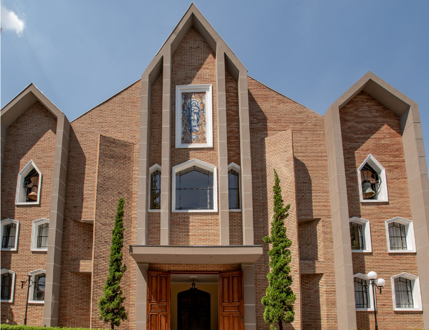
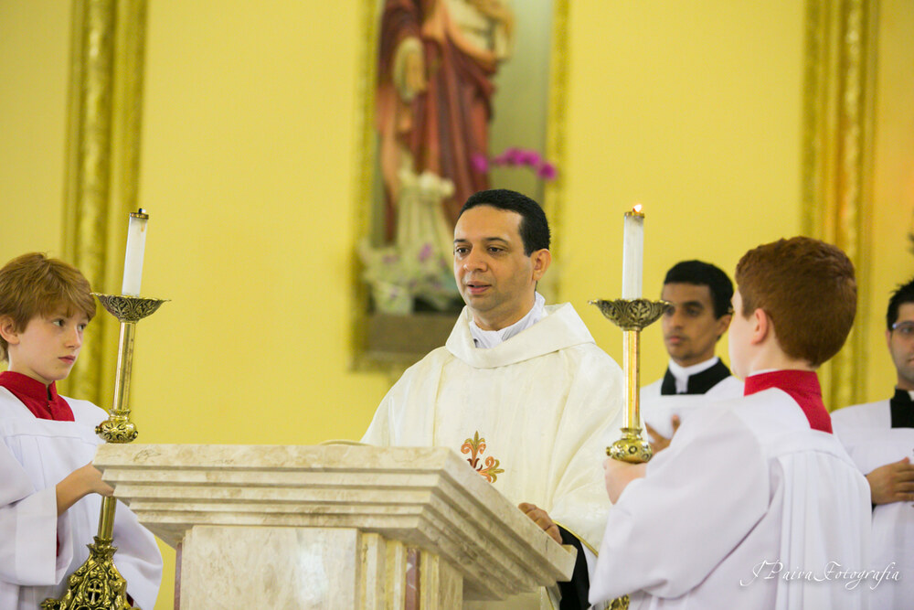
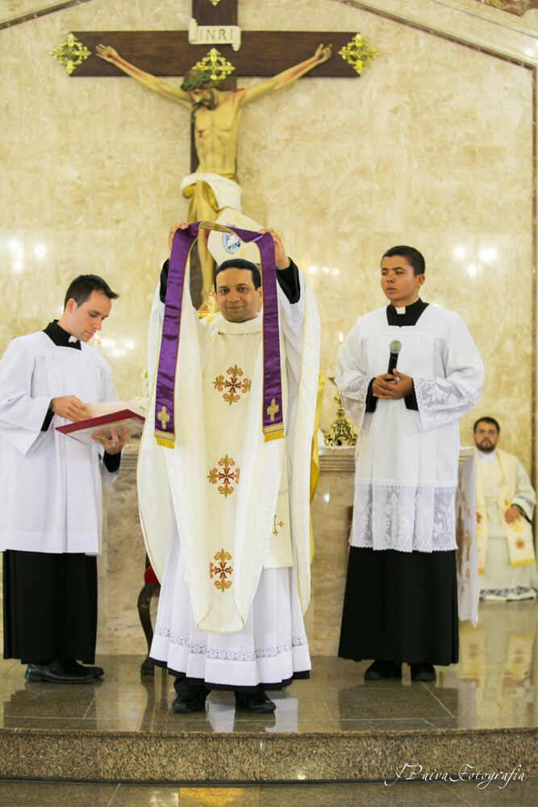
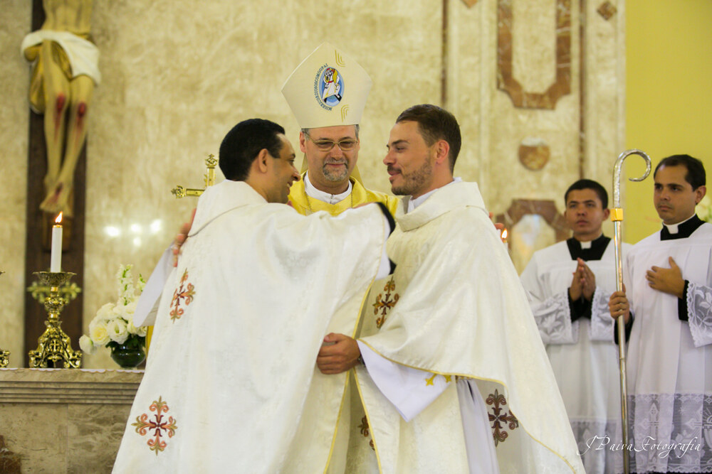
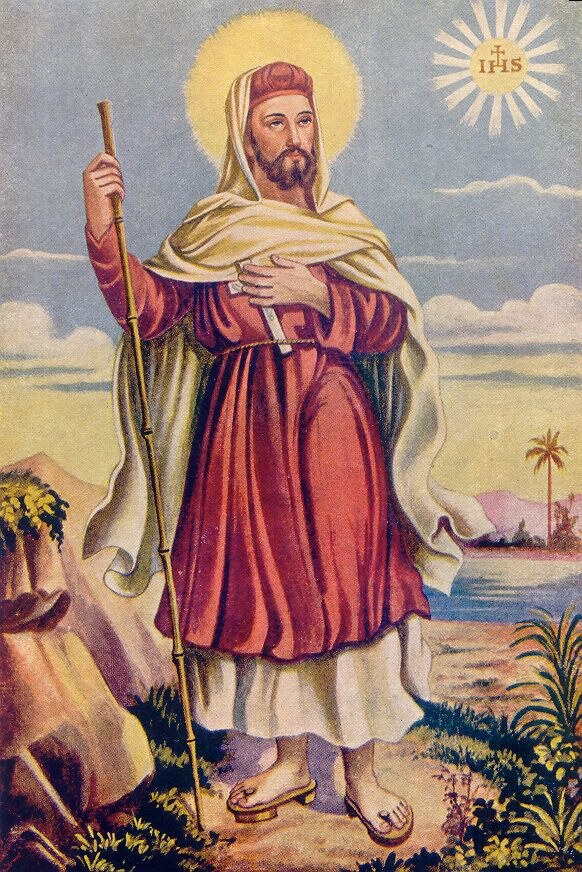

Missas
- Domingo
- 9h, 11h e 18h30
- Segunda a sábado
- 8h
- Terça e quinta
- 18h
- Quarta e sexta
- 12h10
- Sábado
- 17h
A Eucaristia é a fonte e o ápice da vida cristã (CIC 1324).
Não foi possível tocar o canto.
Venha celebrar a Missa, confessar-se ou rezar conosco.
Rua Nebraska, 868 · Brooklin Novo

A Eucaristia é a fonte e o ápice da vida cristã (CIC 1324).
Sem agendamento
Terça a sexta, às 9h.
Com agendamento na secretaria
Terça e quinta, às 17h.
Na Reconciliação, recebemos o perdão de Deus e nos reconciliamos com a Igreja (CIC 1422).
Sem eventos especiais confirmados nesta agenda. Para os avisos mais recentes, consulte o Instagram da paróquia ou fale com a secretaria.
O convite da paróquia chamava os homens a rezar e partilhar na capela da Rua Luisiania, com reflexão de Luciana Migliano e Rodrigo Ventura.
A paróquia celebrou nas redes o encontro da Pastoral Mais Vivência, voltada a pessoas com deficiência e suas famílias.
Em 2024, a festa da paróquia ocupou os fins de semana de junho, com entrada franca.
Registros de encontros passados. Para saber o que vem a seguir, acompanhe o Instagram e o Facebook da paróquia.
Pelo Batismo, nascemos para a vida em Cristo e passamos a fazer parte da Igreja (Mt 28,19; CIC 1213). Para batizar seu filho, pergunte à secretaria sobre a preparação de pais e padrinhos, os documentos e as datas.
No Matrimônio, os esposos batizados firmam uma aliança para toda a vida, elevada por Cristo à dignidade de sacramento (Mt 19,4–6; CIC 1601). Se vocês vão se casar na Igreja, a secretaria pode orientar sobre a preparação, as datas e os documentos.
A paróquia nasceu do empenho dos moradores do Brooklin Novo, que se reuniram para erguer uma igreja no bairro.
Na casa de Alberto Paranhos, na Rua Califórnia, moradores formam a comissão para construir a igreja. O Pe. Luiz Gargione sugere São João de Brito como padroeiro.
Dom Carlos Carmelo de Vasconcelos Motta, arcebispo de São Paulo, recebera em Portugal uma imagem do santo. O bairro a acolheu na Rua Luisiania com missa campal, procissão e banda.
Leilão, churrasco, tômbola e cinema ao ar livre ajudaram a erguer a igreja. No domingo, foi inaugurada a primeira capela, de 3 por 2,40 metros.
É lido o decreto de criação da paróquia, e toma posse o primeiro pároco, Pe. Antonio José dos Santos.
Hoje, a capela da paróquia fica na mesma Rua Luisiania.
Na Rua Nebraska, os vãos pontiagudos marcam a fachada de tijolos. No presbitério, o crucifixo se ergue atrás do altar. As fotografias registram a Missa de posse do Pe. Vicente Gilson, em janeiro de 2016: a proclamação da Palavra no ambão e a celebração junto ao altar.




Aos 15 anos, João entrou na Companhia de Jesus, apesar da pressão da corte para que ficasse. Sua decisão convida a ouvir o chamado de Cristo antes de escolher pelo prestígio (Mt 4,18–22).
Como imitá-lo: Leve à oração uma escolha que você tem feito para agradar aos outros. O que mudaria se buscasse primeiro agradar a Deus?
João adotou o modo de viver de um asceta local. Isso lhe permitiu aproximar-se de pessoas de diferentes castas para anunciar o Evangelho. É um modo concreto de entender São Paulo quando diz que se fez tudo para todos, por causa do Evangelho (1Cor 9,19–23).
Como imitá-lo: Procure alguém que costuma ficar de fora. Escute antes de falar e descubra como pode servi-lo.
O rei quis que João ficasse em Portugal para ensinar seus filhos. Ele voltou à missão, apesar das ameaças, e viajava de noite para celebrar a Missa e batizar. Sua escolha ajuda a entender o que Jesus pede de quem quer segui-lo: tomar a cruz a cada dia (Lc 9,23).
Como imitá-lo: Retome um compromisso de serviço que ficou para trás por comodidade. Comece por uma tarefa concreta esta semana.
João morreu mártir em Oriyur. O Catecismo chama o martírio de testemunho supremo da verdade da fé (CIC 2473). Ao comentar Jo 12,24, Santo Agostinho lembra que o grão de trigo é, antes de tudo, o próprio Cristo: é da sua entrega que vem o fruto.
Como imitá-lo: Peça a Deus coragem para uma fidelidade pequena e concreta: dizer a verdade, cumprir uma promessa ou pedir perdão.
«São João de Brito, modelo para todos nós de que o amor a Cristo, à Igreja e a salvação das almas não pode ter medidas.»
Leia a biografia na Companhia de Jesus. A Igreja vê nos santos exemplos de seguimento de Cristo e pede a sua intercessão (CIC 956; Sacrosanctum Concilium, 104).
São João de Brito, rogai por nós.
Rua Nebraska, 868 · Brooklin Novo, São Paulo
Terça a sábado, 8h–12h e 13h–17h
Pároco: Pe. Vicente Gilson dos Santos · Vigário: Pe. Antônio Portilho
Rua Nebraska, 868 · Brooklin Novo, São Paulo